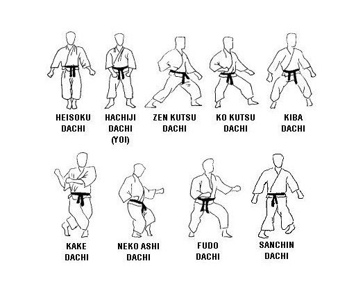

1. ДАЧА (ХИДАРИ ДАЧА, МИГИ ДАЧА) - стойка (левая, правая).
2. КАМАЕ ДАЧА (ГЕДАН, ЧУДАН, ДЖОДАН) - свободная позиция в схватке (нижняя, средняя, высокая), центр тяжести в середине,
3. ХАНМИ - стойка с бедрами и корпусом под 45°.
4. ЁЙ (ШИЗЭН ТАЙ) - исходная стойка.
5. ХАЧИДЖИ ДАЧА - ширина плеч, стопы слегка в стороны.
6. УРА ХАЧИДЖИ ДАЧА - стопы слегка вовнутрь.
7. МУСУБИ ДАЧА - пятки вместе, стопы под 45°.
8. ХЭЙКО ДАЧА - ширина плеч, стопы прямо (параллельно друг другу).
9. ХЭЙСОКУ ДАЧА - ноги и стопы вместе.
10. САНЧИН ДАЧА - стойка "песочные часы", центр тяжести в середине,
11. КИБА ДАЧА - стойка "всадника", стопы параллельны, центр тяжести в середине.
12. ШИКО ДАЧА - аналогично КИБА ДАЧА, стопы в стороны, центр тяжести в середине.
13. МОТО ДАЧА – высокая передняя стойка, центр тяжести в середине.
14. ДЗЕНКУТСУ ДАЧА - передняя стойка, центр тяжести немного перемещён на переднею ногу.
15. УРА ДЗЕНКУТСУ ДАЧА - обратная ДЗЕНКУТСУ ДАЧА ("УШИРО").
16. КОКУТСУ ДАЧА - задняя стойка, центр тяжести немного перемещён на заднею ногу.
17. ФУДО ДАЧА - прототип КОКУТСУ ДАЧА, центр тяжести в середине, ширина плеч.
18. НЕКО АШИ ДАЧА - стойка кошки.
19. КАКЭ АШИ ДАЧА - стойка змеи.
20. ЦУРА АШИ ДАЧА - стойка цапли.
21. ГАНКАКУ ДАЧА - стойка журавля.
22. СОУЧИН ДАЧА - аналог КИБА ДАЧА, стопы и бедра под 45°, центр тяжести в середине.
23. ХАНГЕТСУ ДАЧА - стойка полумесяца, центр тяжести в середине.
24. ИЦУРИ АШИ - промежуточный шаг, подшагивание.
